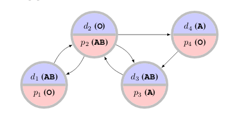

My name is Michael Jeremiah Curry. I received my Ph.D. from the University of Maryland, College Park in the Computer Science department, advised by John Dickerson and Tom Goldstein and affiliated with the Center for Machine Learning. Previously I attended Columbia University, where I received an MS in computer science, and Amherst College, where I received a BA in computer science.
I am currently a postdoc, splitting time between Sven Seuken's Computation and Economics Research Group at the University of Zürich, and David Parkes' group at Harvard SEAS.
A truthful, incentive compatible, or strategyproof economic mechanism is one where participants have no incentive to lie or otherwise behave strategically. (The classic truthful mechanism is a second-price auction, where the highest bid wins and pays the second-highest bid.) A grand challenge in mechanism design has been to design truthful auction mechanisms that maximize revenue. Myerson solved the problem for sales of a single item in 1981, and there has been very limited progress since then -- some results are known for selling multiple items to a single bidder, but even for selling two items to two agents, nothing is known beyond very simple special cases.
Duetting et al. published Optimal Auctions Through Deep Learning, which attempts to use the tools of deep learning to learn strategyproof mechanisms. The idea is to define a mechanism which is differentiable, and maximize revenue via gradient ascent. In limited settings, they can define architectures which will always be strategyproof; in more general settings, they define an architecture called RegretNet which can represent any auction, and incentivize strategyproofness by adding a term in the loss function.
The RegretNet architecture may underestimate the degree to which strategyproofness is violated, as it uses a gradient-based approximation. Our NeurIPS 2020 paper Certifying Strategyproof Auction Networks adapts techniques from the adversarial robustness literature to exactly compute this quantity for a trained network. The idea is to embed the network itself in an integer program and directly solve a maximization problem for each player's utility.

I have worked on applying machine learning to problems in matching and allocation. A particular application is to the kidney exchange problem, in which transplant patients and their willing but biologically-incompatible donors exchange kidneys, sometimes in cycles or long chains.
Although the problem is NP-hard there are reductions to integer programming allowing efficient solutions in practice. Kidney exchange networks have been very successful around the world, but there are still open research problems whose solutions could dramatically improve quality-of-life for the many patients still waiting for transplants.
One particular problem in kidney exchange is that patients and doctors are free to reject offered transplants, and often do, which can have cascading effects on other transplants. To avoid this, doctors are asked to pre-screen unacceptable transplants before matching takes place, but they only have time to screen a limited number. Our NeurIPS 2020 paper Improving Policy-Constrained Kidney Exchange via Pre-Screening formalizes and investigates the problem of finding the highest-leverage potential transplants to submit for pre-screening.
In summer 2021, I was fortunate to intern at Salesforce Research, where I participated in a project on the use of multi-agent reinforcement learning to approximate economic equilibria in complex, heterogeneous simulation environments with multiple hierarchical levels of interacting agents.
In the summer of 2020, I participated in the G-RIPS program at the Institute for Pure and Applied Mathematics at UCLA. Our team was sponsored by AMD and focused on investigating the use of neural networks as approximate wavefunctions for many-electron quantum systems.
I was funded by a DARPA grant related to game theory. The focus of the project is a multiplayer version of classic influence maximization problems on social networks -- how should an advertiser spread their budget across the network, when dealing with multiple strategizing opponents trying to do the same thing?
It is possible to model this problem in a particularly nice way, resulting in a game which is socially concave. In socially concave games, when players individually update their strategies in a no-regret manner, they jointly reach a pure Nash equilibrium. My contributions have been to the applied side of the grant, dealing with the applications of the techniques to real-world graphs and concrete implementations of the no-regret algorithms using the mirror descent framework. This work resulted in the paper Scalable Equilibrium Computation for Multi-agent Influence Games on Networks at AAAI 2021.
I have also worked at the National Institutes of Health, in the Section on Quantitative Imaging and Tissue Sciences, on projects related to making predictions from the fusion of multimodal structural and functional imaging data.
Blog posts/notes: